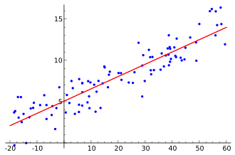
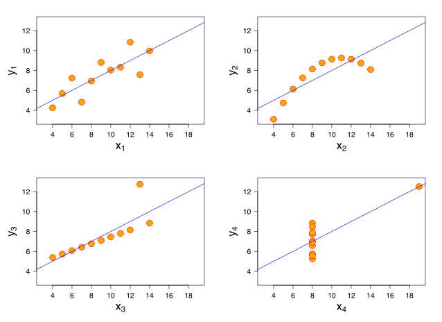

Linear regression

In statistics, linear regression is an approach for modeling the relationship between a scalar dependent variable Y and one or more explanatory variables (or independent variables) denoted X1, X2... Xp. The relationships are modeled using linear predictor functions whose unknown model parameters are estimated from the data. Most commonly, the conditional mean of Y given the value of the other variables is assumed to be an affine function of the variables.
The goal can be the prediction of the dependent variable based on values of the explanatory variables (for instance to predict the probable values of future observations), or the estimation of the explanatory power of each variable on Y on a given data sample (to determine which variables have a strong influence on the dependent variable, or on which variables efforts should be focused).
The linearity of the model means that the relationship between the variables is represented as a straight line (for instance the red line going through the cloud of observation points on the figure). Although linearity is the simplest model one can consider when modeling the complexity of the world (see degrees of freedom), it is often sufficient to detect general trends in patterns.
The basic model for linear regression is : Yi = b0 + b1 Xi1 + b2 Xi2 + ... + bp Xip + ei
Where we consider n observations of one dependent variable (Y) and p independent variables (X1... Xp). Thus, Yi is the ith observation of the dependent variable, Xij is ith observation of the jth independent variable, j = 1, 2, ..., p. The values bj represent the estimates of the parameters on the sample, and ei is the error for the ith observation.
The random errors ei are also called residuals, as they correspond to the difference between the predictions of the model, and the observed values of the dependent variable. They are what remains once everything that is explained by the model is removed. Errors are assumed to be independent, identically distributed, and normal.
Although many methods exist to estimate the parameter values, they usually rely on least squares estimation (for instance ordinary least squares - OLS), which aims at maximizing the explained variance, and thus minimizing the residuals around the regression line. This is sometimes called the BLUE, standing for the Best Linear Unbiased Estimator.
To determine if a model was useful for explaining the data, one can compare this model to the one corresponding to the null hypothesis (i.e. no effect of the independent variables) using a Fisher test, which is one way to perforrm statistical hypothesis testing. This Fisher test (or F-test) checks how much the residuals are reduced with the full model relatively to the null hypothesis (F = explained variance / unexplained variance). Yet, statistical significance is only obtained if the difference is sufficient, relatively to the number of observations (n in the above equations) and to the number of parameters of the model (p) (please refer to degrees of freedom for more details).
After the model has been fitted to the data, it also possible to test if individual parameter estimates bj are statistically different from 0. This means that the associated variable Xj has a significant effect on Y. For this purpose, the same method is used, again relying on statistical hypothesis testing, but this time performing a Student's t-test. This test provides positive results if the estimated distribution of the parameter (due to uncertainty on the estimated mean value) is sufficiently distant from 0

Linear regression is a special case of the general linear model, where there can be several dependent variables. Additionally, based on the number of independent variables, the names simple linear regression and multiple linear regressions are often used. These terms are distinct from multivariate linear regression, where multiple correlated dependent variables are predicted, rather than a single scalar variable.
Like all forms of regression analysis, linear regression focuses on the conditional probability distribution of Y given X, rather than on the joint probability distribution of y and X, which is the domain of multivariate analysis.
As for most statistical method, there are conditions to meet in order to apply linear regression correctly, and avoid incorrect inferences. In the case of linear regression, residuals must satisfy the three main following constraints:
- Normality: The distribution of the errors should follow a Gaussian profile, else the line might not be representative of the data. This may for instance happen if outliers pull the line away from the rest of the observations, or if a linear model is not a good model of the data structure.
- Homoscedasticity: The dispersion (variance) of the residuals should not depend on the explanatory variables. The worst case being a funnel type distribution of residuals, biasing the results and leading to higher statistical errors.
- Independence: There should be no structure in the residuals (for instance detemrined by other measured variables). It else means some dependence between the observations should have been taken into account in the model (for instance repeated measures).